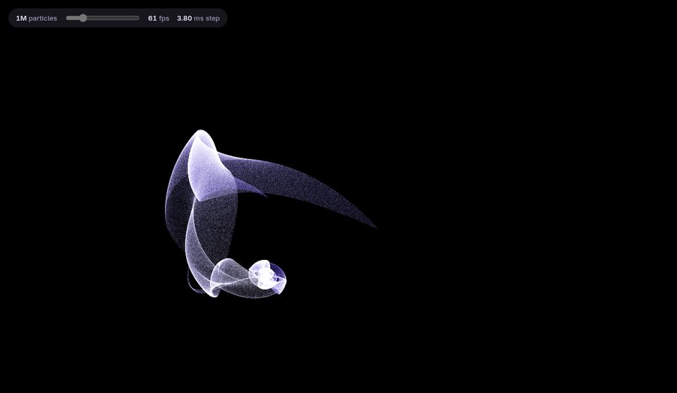
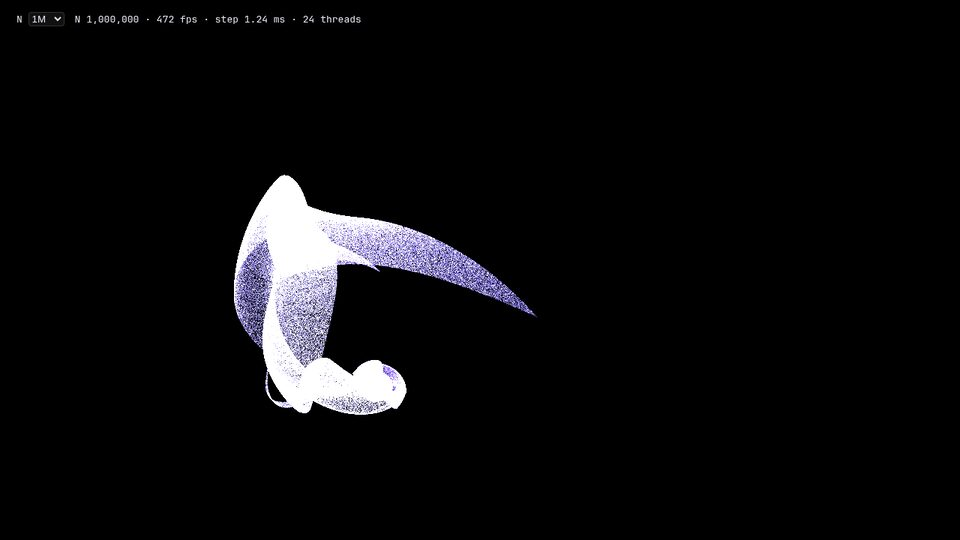
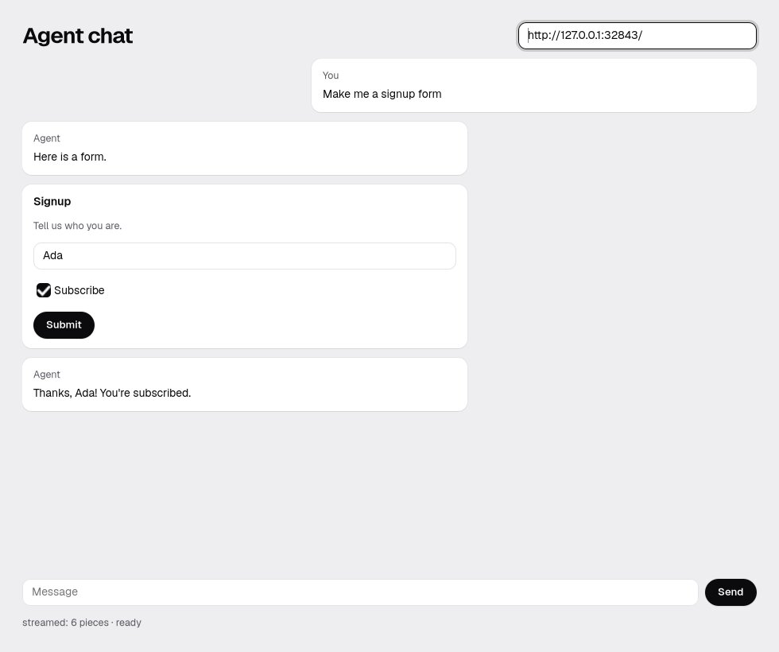

Measured · one RTX 3090
One particle field, four ways.
A million particles, pulled by your pointer. Same app, same machine.



A frame at 1M particles, on screen, vsync off. Lower is better.
Scoreboard on screen
WebGPU speed. 2× native Rust.
Ranked where you see it. Native Rust ran offscreen, so it's shown, not ranked.
omxcode wins
= JS + WebGPU at 1M and 2M
1.9× faster than native Rust at 20M
60 fps to 20M particles
MCP + AG-UI built in
Frame, 1Mms13.881.211.861.230.34omxcode ties
Frame, 2Mms25.061.243.511.310.64omxcode ties
Frame, 20Mms217.703.0153.453.131.9× Rust5.99WebGPU, by 4 %
60 fps up toparticles100k20M2M20M20Momxcode ties
GPU step, 20Mms · JS and wasm on the CPU71.20.77434.30.7620.771Tie
Agent toolsMCP · AG-UInononoyesnoomxcode
Rust wins
211 ms cold start
146 MB memory
0.34 ms frame at 1M, offscreen
WebGPU a little faster at 5M–20M
Why offscreen: on this NVIDIA + Wayland desktop, Rust's window is capped at 16.7 ms a frame.
100M-row data benchmark · results coming
Agent-native works today
One language. Fewer ways to break.
One file
UI and GPU kernel, one language.
JS + Rust13 filesRustJSWGSLGLSLHTMLCSSTOMLBashPython
JS + WebGPU8 filesJSWGSLHTMLCSSPython
omxcode1 fileMojo
Every extra language is another seam to keep in sync. One build, one thing to review.
MCP, built in
The slider is a tool.
{"name": "slider", "arguments": {"value": 50}}
Did slider. Now: 5M particles · 195 fps
A real call to this app. Nothing written for it.
The other buildspixels and keystrokesomxcodenamed tools
AG-UI, built in
The agent sends data. omxcode draws it.

Checked against the catalog. Your own model, via omxconsole.
Tests and lint
Every component tested. Apps stay on the rails.
36components, each run by a script


a lint keeps apps to components and theme roles
The code
Same step. Three stacks.
JS + WebGPU WGSL beside JS
@compute @workgroup_size(WG) fn main(@builtin(global_invocation_id) g: vec3u) { let i = g.x + g.y * P.rowStride;
JS + Rust Rust, then wasm glue
pub fn step_scalar(p: &mut [f32], v: &mut [f32], cx: f32, cy: f32) { for (p, v) in p.chunks_exact_mut(2).zip(v.chunks_exact_mut(2)) { let dx = cx - p[0];
omxcode runs on the GPU
def advance(p: Point, k: Knobs) -> Point: var dx = k[0] - p[0] var dy = k[1] - p[1]